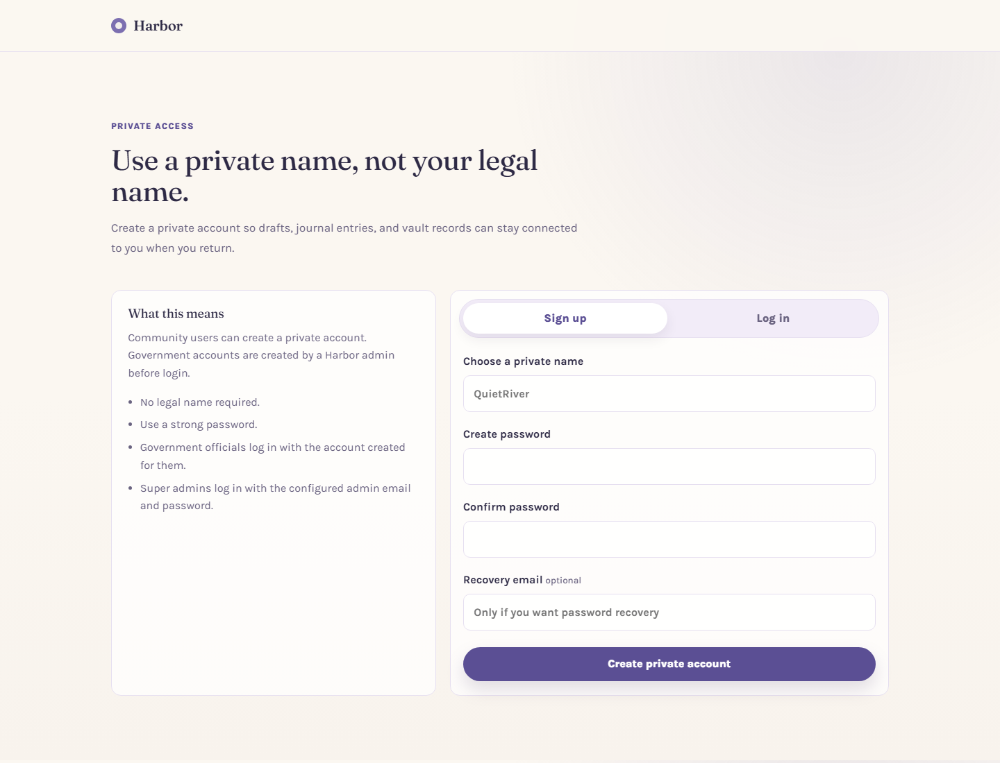
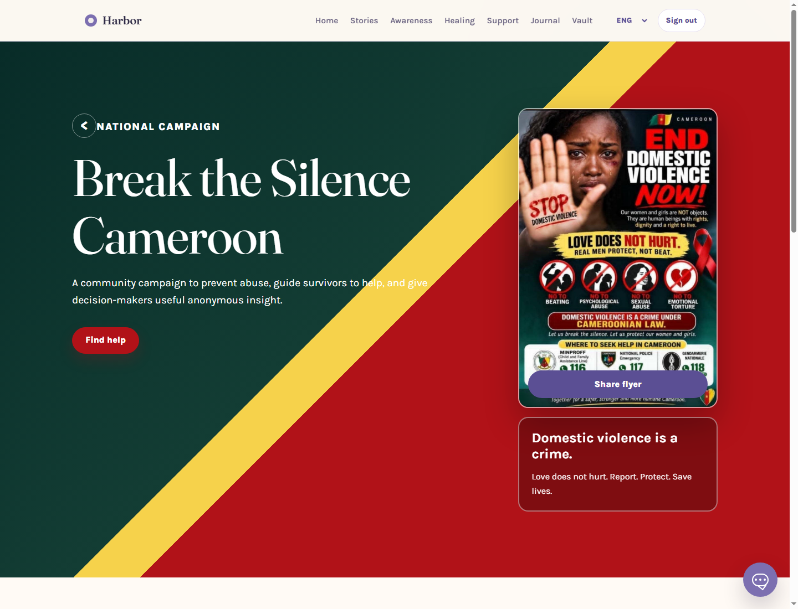
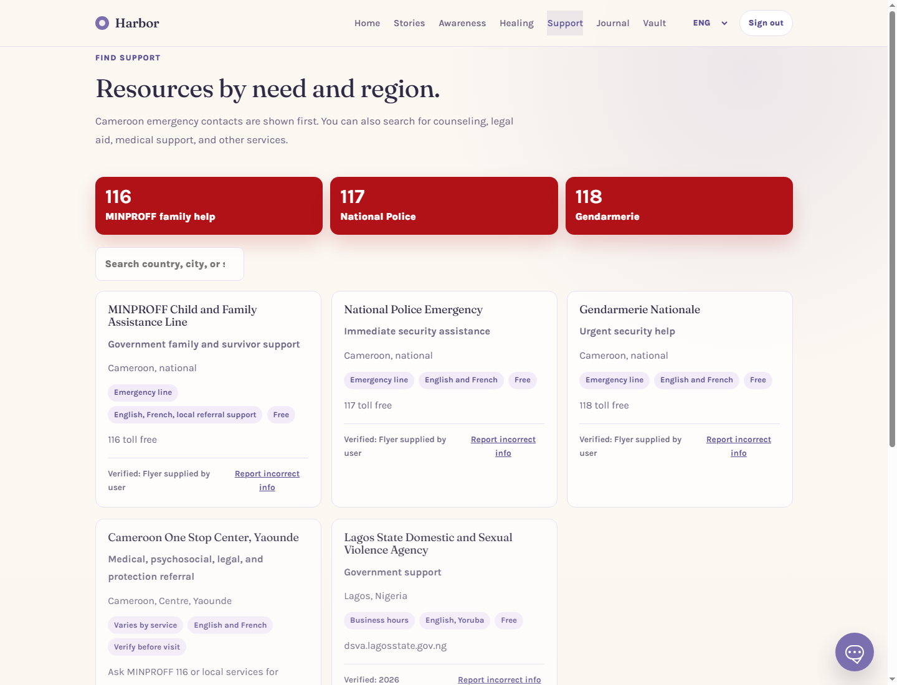
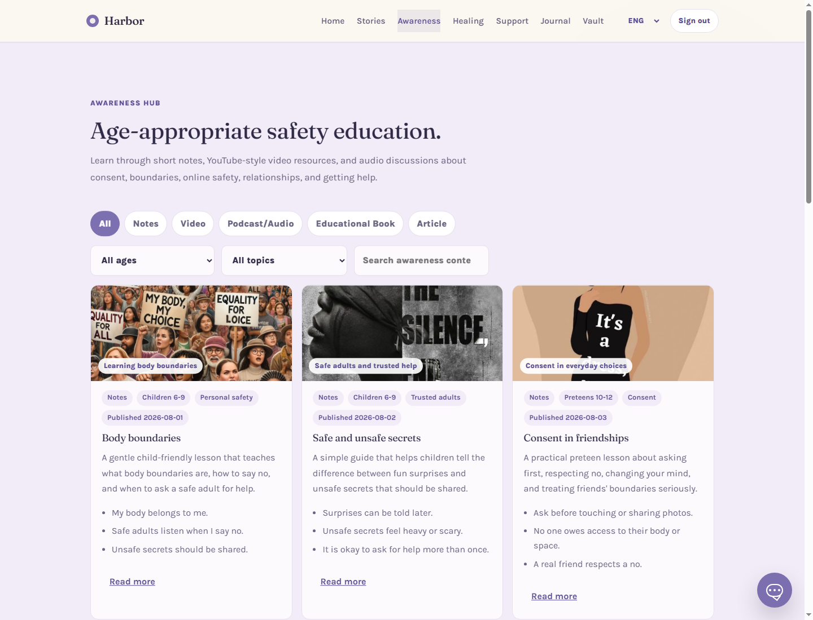
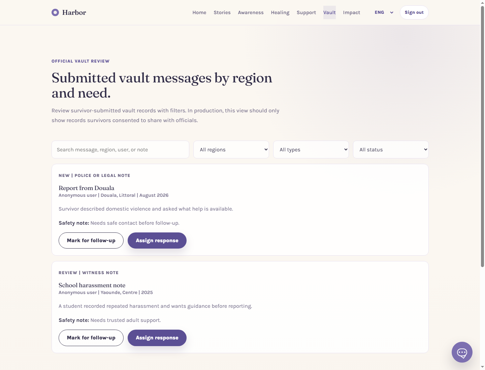
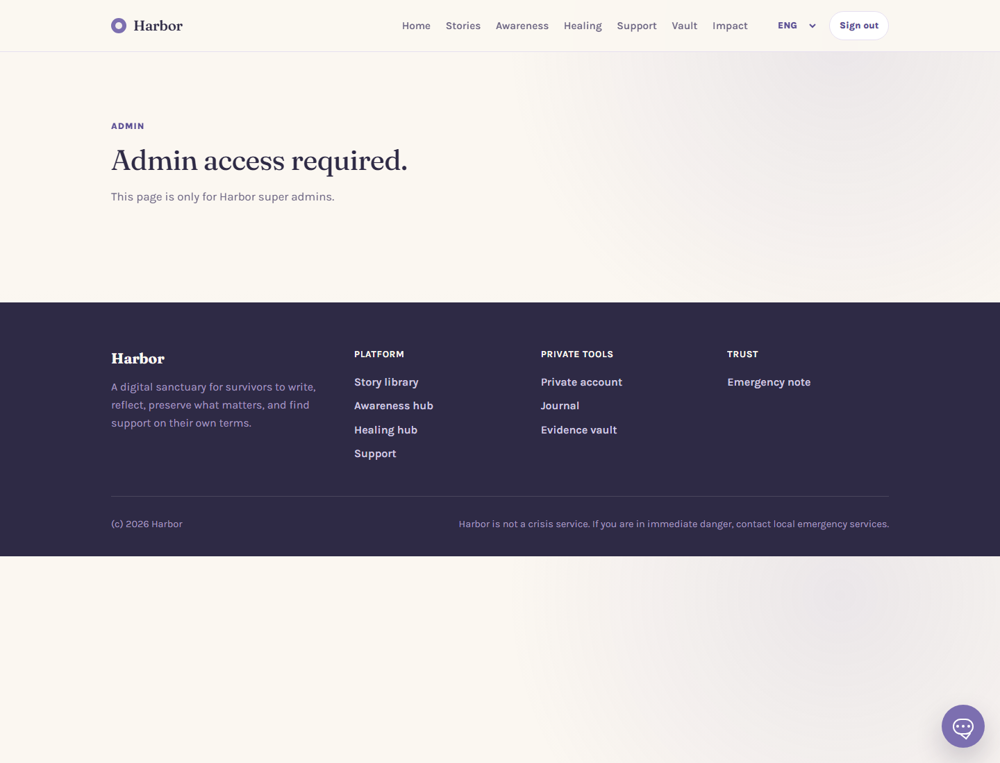

Harbor
A private, survivor-centered digital platform for reporting support, awareness, healing, and government-informed response to gender-based violence.
Table of Contents
- Executive Summary
- The Pain Point Harbor Responds To
- Purpose and Strategic Value
- Why the Name “Harbor” Works
- Target Population
- System Overview
- Core Functionalities
- Actors, Roles, and Permissions
- Action Flows
- Government and Official Use
- Privacy, Safety, and Ethics
- Feature Importance
- Future Development
1. Executive Summary
Harbor is a trauma-informed web platform designed to support survivors and communities affected by domestic violence, sexual abuse, emotional abuse, femicide risk, harassment, coercion, and other forms of gender-based violence. The system combines private survivor tools, public education, emergency support information, anonymous storytelling, official awareness campaigns, and restricted government dashboards.
The platform is especially designed for the African context, with a strong focus on Cameroon. It includes Cameroon emergency contacts such as MINPROFF 116, Police 117, and Gendarmerie 118, a “Break the Silence Cameroon” campaign page, bilingual English/French interface direction, and role-based access control for government officials and administrators.
Harbor is not simply a reporting tool. It is a protected entry point for people who may not yet be ready to report formally, but who need to write, understand, preserve, learn, seek help, or find a path toward support. It gives survivors control while giving approved institutions a safer way to understand trends and respond to needs.

Figure 1: Harbor home screen, introducing the platform as a private survivor-centered space.
2. The Pain Point Harbor Responds To
Violence often thrives where silence is forced. Survivors may be afraid to speak because they fear shame, family pressure, disbelief, retaliation, social exposure, police intimidation, financial dependence, or being blamed for what happened to them.
In many communities, survivors of domestic violence, rape, sexual harassment, child abuse, online blackmail, emotional torture, and coercive control do not immediately approach police, hospitals, ministries, or legal services. This delay is not because the harm is small. It is often because the survivor is trying to survive the next hour, the next night, or the next confrontation.
Common pain points include:
- Fear of exposure: survivors may not want their name, story, photos, location, or accused person details to become public.
- Stigma and victim blaming: survivors may be asked what they wore, why they stayed, why they delayed, or why they trusted the offender.
- Confusion about where to go: many people do not know whether to call a ministry line, police, gendarmerie, hospital, counselor, lawyer, school authority, or community leader.
- Loss of evidence: messages, screenshots, dates, witnesses, and details can disappear or become harder to remember over time.
- Lack of age-appropriate education: children and young people often do not receive clear, simple teaching about body boundaries, unsafe secrets, consent, and online pressure.
- Weak feedback loops for government: authorities may not see where support needs are rising because many cases remain hidden.
Harbor responds to these pain points by creating a calm, private, educational, and structured place where users can take small steps without being forced into public disclosure.
3. Purpose and Strategic Value
The purpose of Harbor is to reduce silence around violence while protecting the dignity, privacy, and agency of survivors. It gives people tools to document, learn, seek support, and participate in prevention campaigns at their own pace.
Strategic Objectives
- Provide a private digital space for survivors to write, save, and reflect safely.
- Connect people to local support resources and emergency contacts.
- Educate children, teens, young adults, parents, teachers, and community members about prevention.
- Allow anonymous story sharing without public comments or harmful debate.
- Enable approved government users to understand anonymous trends and review only survivor-consented vault records.
- Support national campaigns against domestic violence, sexual abuse, emotional abuse, and femicide.
For government and institutional stakeholders, Harbor can become a privacy-preserving signal system. It can show what types of help people are seeking, which regions need more outreach, which educational materials are being used, and which emergency contacts people are opening. This helps authorities plan without exposing survivors.
4. Why “Harbor” Is the Perfect Name
The name Harbor communicates safety without sounding clinical, legalistic, or intimidating. A harbor is a place where people come in from danger, storms, fear, and uncertainty. It does not force them to explain everything immediately. It offers shelter, direction, and time.
This is exactly what the platform aims to be: a place where survivors can pause, gather their thoughts, protect their story, and decide what next step feels safe. The name is gentle enough for survivors, credible enough for institutions, and broad enough to grow into education, campaigns, reporting support, policy insight, and community prevention.
Harbor also avoids language that could frighten users away. A survivor may not be ready to click a button called “Report rape” or “Police case,” but they may be ready to enter a space called Harbor.
5. Target Population
Harbor is designed for a wide but carefully defined population:
| Population | Need | How Harbor Supports Them |
|---|---|---|
| Survivors of domestic violence, sexual abuse, harassment, and emotional abuse | Privacy, safety, documentation, support, and control | Private journal, evidence vault, anonymous story sharing, support directory, emergency contacts |
| Children and teens | Simple education about boundaries, unsafe secrets, consent, and online pressure | Age-appropriate awareness lessons, videos, and practical learning points |
| Parents, guardians, teachers, and caregivers | Guidance on prevention and how to respond calmly | Awareness hub, educational books/articles, podcasts, and caregiver-focused lessons |
| Community members and bystanders | Understanding how to help without causing more harm | Campaign pledges, support messages, prevention content, and emergency contacts |
| Government officials and approved partners | Safe trend insight, campaign management, and consent-based case review | Government dashboard, official vault review, awareness content management, flyer management |
| Super administrators | Controlled user governance and official account creation | Admin panel for adding, viewing, editing, deleting government officials |
6. System Overview
Harbor is organized around a small number of high-value spaces:
- Home: introduces Harbor and directs users to stories, support, and the campaign.
- Stories: a moderated story library where survivors can read and share without public identity.
- Awareness: educational notes, videos, podcasts, audio, articles, and books.
- Healing: grounding and reflection exercises.
- Support: Cameroon-first emergency contacts and support directory.
- Journal: private reflection area for community users.
- Vault: private evidence records for community users; official review dashboard for approved government users.
- Campaign: public campaign page for “Break the Silence Cameroon.”
- Government Impact: restricted trend dashboard for approved government users.
- Admin Panel: super admin control for official account management.
7. Core Functionalities
7.1 Break the Silence Cameroon Campaign
The campaign page localizes Harbor for Cameroon. It includes a Cameroon domestic violence flyer, emergency contacts, campaign messages, and a share button. It helps turn the platform from a private tool into a national awareness and prevention instrument.
The campaign page matters because public education is essential. Survivors are not the only people who need to change behavior. Families, men, schools, communities, local authorities, faith groups, and institutions must also understand that violence is a crime and that love does not hurt.

Figure 2: Campaign page with Cameroon-focused message, flyer, support link, and share action.
7.2 Support Directory and Emergency Contacts
The Support page displays Cameroon emergency lines prominently: MINPROFF 116, National Police 117, and Gendarmerie 118. It also lists broader support resources such as government support, referral centers, counseling, legal aid, and medical support.
This is important because survivors often do not know where to begin. A simple number can be the difference between isolation and immediate help.

Figure 3: Support page leading with Cameroon emergency contacts.
7.3 Awareness Hub
The Awareness Hub contains educational materials for different audiences and ages. Content can include notes, videos, podcasts, audio lessons, articles, and educational books. Each item can show a thumbnail, content type, audience, topic, summary, key points, and published date.
Government officials and approved partners can manage this content through a role-restricted form. They can create, edit, and delete awareness content, upload or link media, add thumbnails, and publish materials for everyone to view.
This feature is important because prevention requires repetition, clarity, and trusted public messaging. Schools, youth groups, families, and community organizations need simple educational materials that can be understood quickly.

Figure 4: Awareness Hub with official content management form for approved government users.
7.4 Stories
The Stories feature allows survivors to read shared experiences and submit their own stories privately, anonymously, or with a nickname. It avoids public comments and ranking systems because those can become harmful. Instead, it uses supportive reactions.
This is important because stories reduce isolation. A survivor who reads “someone believed me” or “I wrote it down first” may begin to understand that what happened was not their fault and that help can start with a small step.
7.5 Private Journal
The Journal gives community users a private place to write thoughts, moods, reflections, and recovery milestones. It is hidden from government users because officials do not need access to personal healing notes.
This matters because healing is not only legal or medical. Survivors often need a private place to name what they feel without pressure to report, explain, or perform strength.
7.6 Evidence Vault
The Vault helps users preserve factual details: dates, locations, people involved, witnesses, screenshots, medical notes, legal follow-up, and safety notes. It is designed for private record-keeping, not public accusations.
A clear consent checkbox allows users to choose whether an official support team may review the record. Without consent, the government view should not display the record.
This matters because many survivors remember details in fragments. The Vault helps them preserve information while they are still deciding what to do next.

Figure 5: Government view of consented vault messages with filters.
7.7 Government Impact Dashboard
The Government Impact view presents anonymous metrics such as support searches, emergency taps, awareness lesson activity, and priority regions. It is restricted to approved government users.
This feature is important because governments need data to act, but survivors need privacy to stay safe. Harbor balances these needs by emphasizing aggregated, non-identifying insight.
7.8 Admin Panel
The Admin Panel is restricted to super administrators. It allows the admin to create government official accounts, view details, edit official information, delete officials, and trigger invitation emails for password setup.
This matters because government access should never be self-assigned. A random person should not be able to sign up as an official. The admin-created account flow protects the integrity of the system.

Figure 6: Admin Panel for creating and managing government official accounts.
8. Actors, Roles, and Permissions
| Actor | Description | Allowed Actions | Why the Actor Matters |
|---|---|---|---|
| Community User | A survivor, helper, caregiver, student, or ordinary user. | Sign up, log in, read stories, share stories, use journal, save vault records, search support, view awareness content, view campaign. | This is the primary population Harbor protects. Their safety and dignity shape the whole system. |
| Survivor | A community user who has experienced violence or harm. | Write privately, document evidence, decide whether to share anonymously, decide whether officials can review a vault record. | Survivors must stay in control. Harbor avoids forcing public disclosure or immediate formal reporting. |
| Government Official / Approved Partner | A verified authority or partner created by the admin. | View government dashboard, review consented vault messages, manage awareness content, upload/link educational media, update campaign flyer when permitted. | Officials connect the platform to public response, prevention, and policy action. |
| Super Admin | The trusted system administrator. | Create official accounts, send password setup invites, view/edit/delete officials, manage access, oversee governance. | The admin protects RBAC integrity and prevents unauthorized people from becoming officials. |
| Moderator | A future safety role for reviewing public content. | Review stories, check harmful content, apply content warnings, maintain community safety. | Moderation prevents the platform from becoming a place of harassment, blame, or retraumatization. |
9. Action Flows
9.1 Community User Flow
- User creates a private account using a private name and password.
- User lands on the home page and chooses whether to read stories, find support, open the campaign, use healing tools, journal, or save vault details.
- If writing a story, the user chooses privacy level: private, anonymous, nickname, or draft.
- If saving evidence, the user records facts and decides whether officials may review the record.
- User can return later to continue at their own pace.
9.2 Official Account Flow
- Super admin creates an official account from the Admin Panel.
- The official receives an email with a password setup link.
- The official creates a password and logs in.
- The official sees government-specific tools such as Impact, official Vault review, and Awareness content management.
- The official cannot access private community-only spaces such as Journal.
9.3 Awareness Content Flow
- Government/admin opens Awareness Hub.
- They add a content title, content type, audience, topic, summary, key points, published date, media link or upload, thumbnail, and extra text.
- The item appears publicly as an awareness card.
- Officials can later edit or delete the item.
9.4 Consented Vault Review Flow
- Community user creates a vault record.
- User checks “I want an official support team to review this record” only if they consent.
- Government user opens the official Vault view.
- Government user filters by region, status, type, or search terms.
- Government user marks for follow-up or assigns response according to future case workflow rules.
10. Government and Official Use
Harbor is designed to support government action without turning survivor data into a public or unsafe database. The official view exists for planning, prevention, and response, not surveillance.
Government users are important because violence prevention requires public coordination. Ministries, police, gendarmerie, hospitals, schools, social workers, and legal support bodies all play a role. Harbor gives them structured access to the information they need while respecting survivor consent.
Government Activities
- Publish awareness materials for different audiences.
- Update campaign flyers and official prevention messages.
- Review only vault cases where users have explicitly consented to official review.
- Observe anonymous trends to understand support needs by region and category.
- Coordinate follow-up through assigned case workflows.
11. Privacy, Safety, and Ethics
Harbor must be trusted before it can be useful. The platform therefore follows survivor-centered principles:
- Privacy by default: users are not required to use legal names.
- Consent before official review: government users should only see vault records that survivors explicitly allow.
- No public accused-person database: the platform does not create a public naming system.
- Moderated public stories: stories are designed for support, not debate or blame.
- Role-based access: government and admin features are not available to ordinary users.
- Auditability: future production versions should log sensitive admin and official actions.
Stakeholder concern: Government access can be helpful, but it must be restricted, verified, and accountable. Harbor’s design gives officials tools to act while preventing random users from becoming officials through public signup.
12. Why the Features Matter
| Feature | Problem It Solves | Why It Is Important |
|---|---|---|
| Private accounts | People fear using legal names. | Allows safer access while keeping user records connected. |
| Story sharing | Survivors feel alone and unheard. | Builds solidarity without forcing public identity. |
| Evidence vault | Details and evidence can be lost. | Helps users preserve facts for future help or reporting. |
| Official review consent | Authorities need information, but survivors need control. | Balances response with privacy and dignity. |
| Awareness Hub | Communities lack clear prevention education. | Supports schools, caregivers, youth, and public campaigns. |
| Campaign page | Violence prevention needs visible public messaging. | Creates a Cameroon-centered campaign identity and shareable materials. |
| Government dashboard | Hidden violence creates weak planning data. | Gives anonymous insight for policy, outreach, and resource allocation. |
| Admin-managed official accounts | Random users could pretend to be officials. | Protects authority access and strengthens trust. |
13. Current Implementation Status
Implemented in prototype
- Community sign-up and login.
- Super admin login through configured admin credentials.
- Admin panel for creating, viewing, editing, and deleting government officials.
- Email invite flow for official password setup, with SMTP configuration support.
- Government-specific navigation and restricted views.
- Campaign page with Cameroon flyer and share action.
- Support page with Cameroon emergency contacts.
- Awareness content management by government/admin users.
- Vault privacy consent checkbox and official review interface.
- Database migrations for RBAC, official review, invite tokens, campaign flyers, and awareness publication fields.
14. Future Development Recommendations
- Connect all prototype in-memory routes fully to PostgreSQL for permanent storage.
- Store uploaded files in secure object storage and save URLs in PostgreSQL.
- Implement full translation dictionaries for English and French across all UI and database content.
- Add official email verification and token expiry for invite links.
- Add audit logs for every government/admin view of sensitive records.
- Add moderation workflows for public story approval.
- Add newsroom or recent cases page with strict verification and trauma-informed summaries.
- Add analytics for campaign pledges, flyer shares, awareness content usage, and emergency contact taps.
- Add admin controls for suspending officials and rotating access.
15. Closing Statement
Harbor gives survivors a place to begin before they are ready to speak loudly. It gives communities language to prevent harm. It gives government actors a safer way to see where help is needed. Most importantly, it treats every story as belonging first to the person who lived it.